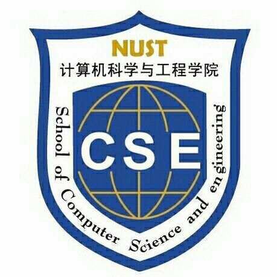

| Research | Teaching |Funding&Awards |Publications |Patents |Software |Academic Services | ||||||
|
Bo Huang 黄波 Ph.D,Associate Professor School of Computer Science and Engineering, Nanjing University of Science and Technology (NJUST), 200 Xiaolingwei Street, Nanjing, Jiangsu 210094, P. R. China Office: Room 3012, E-mail: huangbo@njust.edu.cn Tel: 025-84315651-312 Office Hours: |
 | |||||